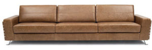
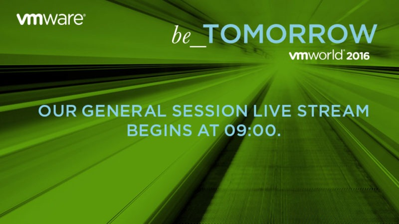
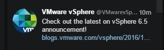

VMworld Europa 2017 - Barcelona
VMworld 2016Compartilhe esse post nas redes sociais...
Olá Homelabers!
[caption id=“attachment_2359” align=“aligncenter” width=“800”] Como assistir a VMworld do sofá da sua casa[/caption]
A VMworld 2017 da Europa começou oficialmente hoje (17/10) mas o Keynote principal, onde os “grandes” anúncios serão feitos acontecerá amanhã 18/09 as 09:00am (05:00am no horário de Brasília). Geralmente a edição da Europa é um grande repeteco da edição americana, mas esse ano como pouca coisa foi anunciada em Las Vegas, essa edição promete.

O twitter está bastante movimentado, muitos eventos começaram ontem.
[caption id=“attachment_2352” align=“aligncenter” width=“325”] Olha só o que vazou no twitter hoje a tarde!![/caption]
Como eu havia “cantado a bola” e o tuite ai de cima confirma, o grande lançamento da VMware nessa VMworld será o vSphere 6.5. Corre nas “internets” e nos grupos de twitter que essa versão não foi lançada em Las Vegas porque ainda estava bastante crua e com muitos bugs
https://twitter.com/DDietrich86/status/787583068181848064
https://twitter.com/VMUG_CEO/status/787734579197120516
Para nós que estamos aqui e não podemos atender o evento, vou deixar algumas dicas de como seguir a VMworld sem estar lá :D
* **Live Sessions** - As sessões principais (General Sessions) são transmitidas ao vivo nos dias 18 e 19/10 as 05:00am (Horário de Brasília) e liberadas depois para replay. Link [aqui](http://www.vmworld.com/en/europe/learning/general-sessions.html)
* **Twitter** - A dica aqui é seguir as Hashtags oficiais do evento e também o twitter da VMworld (@vmworld), o twitter do VMUG (@myvmug) e também o twitter dos blogs oficiais.
* Turma do **vBrownBag** (**Community Tech Talks)** - O pessoal do vBrownbag estará novamente na VMworld com seus Tech Talks da Comunidade. A agenda pode ser conferida [aqui](http://vbrownbag.com/2016/09/vbrownbag-techtalks-at-vmworld-emea-3/) e o live stream [aqui](http://www.ustream.tv/channel/vbrownbag) ou [aqui](http://vbrownbag.com/brownbags/vbrownbags-live). Não deixe de prestigiar esse pessoal, o trabalho que eles fazem é fantástico.
https://twitter.com/mistwire/status/787969884202364928
* Outras **mídias sociais**: [http://www.vmworld.com/en/europe/socialchannels.html](http://www.vmworld.com/en/europe/socialchannels.html)
* **Social Media Stream** - [http://vmwebapp.com/wayin/vmworld.html](http://vmwebapp.com/wayin/vmworld.html)
* **VMware Oficial News Site** - Todos os releases de imprensa são publicados aqui. [http://www.vmware.com/company/news/releases.html](http://www.vmware.com/company/news/releases.html)
* **Blogueiros** - Assine e acompanhe os blogs oficiais da VMware e também os blogueiros independentes (mas oficiais também) listados abaixo. [http://www.vmworld.com/en/europe/bloggers.html](http://www.vmworld.com/en/europe/bloggers.html)
VMworld Blog – official conference blog
VMware Radius Blog – VMware news and highlights
VMware EMEA Blog – VMware EMEA highlights
VMware Blogs Feed – blogs from VMware products & services teams
Compartilhe esse post nas redes sociais...Valdecir Carvalho
Nerd e pai orgulhoso da Mariana e João. Profissional Sênior de TI com foco em arquitetura de infraestrutura e cloud computing. Blogueiro, podcaster, palestrante, amante de comunidades técnicas, fotógrafo aposentado e adora jogos antigos.
#vExpert · #VMUGLeader · #VUGBrasil · #vBronwBagBrasil · #VeeamVanguard